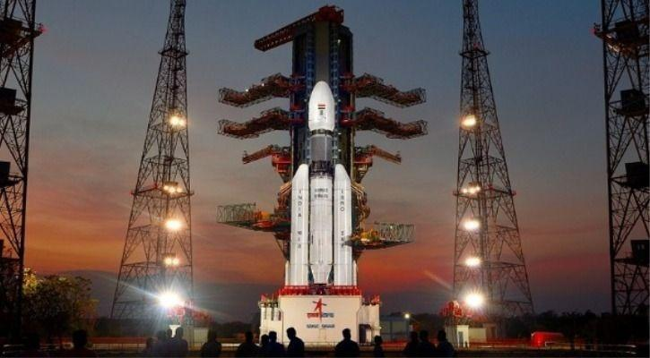

Chandrayan-2
Chandrayaan-2 is India's second lunar exploration mission, launched on July 22, 2019, aiming to study the Moon's surface and search for water ice, particularly in the south polar region.
Mission Components
Chandrayaan-2 consists of three main components:
- Orbiter: The orbiter is equipped with eight scientific instruments designed to map the lunar surface, analyze its mineral composition, and study the lunar exosphere. It operates in a polar orbit at an altitude of about 100 km and is expected to function for several years, significantly longer than the initially planned one year.
- Vikram Lander: Named after Vikram Sarabhai, the founder of India's space program, the Vikram lander was intended to perform a soft landing on the Moon's surface and deploy the Pragyan rover. Unfortunately, it crashed during the landing attempt on September 6, 2019, due to a software error.
- Pragyan Rover: The rover was designed to explore the lunar surface, conduct chemical analyses, and transmit data back to the lander, which would then relay it to Earth. The rover was expected to operate for about 14 Earth days, equivalent to one lunar day.
Launch and Mission Timeline
- Launch Date: Chandrayaan-2 was launched from the Satish Dhawan Space Centre in Sriharikota, India, using a GSLV Mk III rocket on July 22, 2019.
- Lunar Orbit Insertion: The spacecraft successfully entered lunar orbit on August 20, 2019, after a series of maneuvers.
- Lander Separation: The Vikram lander separated from the orbiter on September 2, 2019, in preparation for its descent to the lunar surface.
Scientific Objectives
The primary scientific goals of Chandrayaan-2 include:
- Mapping the lunar surface and studying its topography and mineral composition.
- Investigating the presence of water ice and hydroxyl on the Moon.
- Analyzing the lunar exosphere and understanding the Moon's geological evolution.
Significance
Chandrayaan-2 represents a significant advancement in India's space exploration capabilities, building on the success of Chandrayaan-1, which was launched in 2008. The mission aims to enhance our understanding of the Moon and contribute to global lunar research efforts.
In summary, while the Vikram lander did not achieve a successful landing, the Chandrayaan-2 orbiter continues to provide valuable data about the Moon, marking a crucial step in India's ongoing lunar exploration program.
